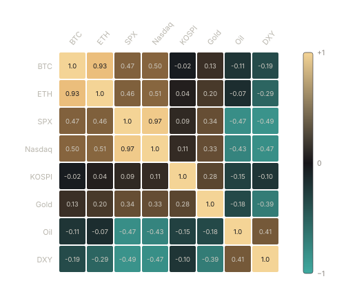

Undertow Whitepaper
Abstract. The world's markets are not independent. Bitcoin, U.S. equities, Korean equities, gold, crude oil and the spot-crypto ETFs all breathe to the same rhythm — the expansion and contraction of global dollar liquidity. What traders experience as a vague, inexplicable sense that "everything is connected" is, in fact, a single underlying force pushing every risk asset in tandem and rotating capital between them as a risk switch flips between risk-on and risk-off. Undertow is a protocol that measures this force. We estimate the unobserved macro state from public market and macro data using a layered pipeline — time-varying correlations, a hidden-Markov regime model, information-theoretic lead-lag analysis, and a composite liquidity index — and publish the result on-chain as a verifiable, manipulation-resistant primitive that any application can consume. An optimistic-oracle design is intended to secure the feed. This paper specifies the model, the oracle, and the protocol; the Undertow token itself launched as a fair-launch, community-owned coin (Section 9) — a community flag, kept honestly separate from the protocol's longer-term, unbuilt ambitions.
1. Introduction
Open any financial feed and the picture looks like noise. Bitcoin rallies one day, gold the next; equities sell off while crude swings on its own. Viewed asset by asset, markets appear to live separate lives. They do not. Beneath the surface, the same hand moves them all.
That hand is liquidity — the looseness or tightness of money, governed by the U.S. dollar, real interest rates, and central-bank balance sheets. When the monetary tap opens, capital floods into risk: equities, Bitcoin and oil rise together. When it closes, capital retreats into safety: the dollar and gold. The "subtle, mutual balancing" between asset classes that every macro observer senses but struggles to articulate is simply this switch flipping back and forth, with capital migrating between assets at each turn. The relationships are not mystical; they are statistical, time-varying, and — we argue — measurable in real time.
Undertow turns that intuition into measurement. We do not forecast prices and we do not control markets. We do for global risk what a weather service does for the sky: read the current state and report it plainly — is the market risk-on or risk-off, how high is the liquidity undertow, and where is capital flowing? Crucially, we publish that reading where programmable capital lives: on-chain.
1.1 Why on-chain
Decentralized finance has excellent price oracles but no macro oracle. A lending market can read the price of ETH to eight decimal places, yet has no notion of whether the entire market is in a risk-seeking or risk-averse regime — the single latent variable that governs correlation, volatility, and tail risk across every collateral type simultaneously. During a risk-off cascade, "uncorrelated" collateral becomes correlated, liquidations chain, and protocols calibrated to calm conditions break. A trustworthy, on-chain reading of the macro state is therefore not a convenience but a missing safety primitive. Undertow builds it.
1.2 Contributions
- A layered, fully specified cross-asset macro model that outputs a discrete risk regime, a continuous liquidity index, and a per-asset sensitivity decomposition from public data.
- A staked optimistic oracle design that brings off-chain statistical output on-chain with economic guarantees and a dispute-resolution path.
- An honestly scoped fair-launch community token — live today, with no insider allocation and no promised utility — kept separate from the protocol's longer-term ambitions.
- A staged path from a single signed reporter to multi-operator consensus and, ultimately, verifiable computation.
1.3 Related work
The risk-on/risk-off characterization of global markets is well documented in the macro-finance literature, as are regime-switching models of returns and dynamic conditional correlation. Price oracles such as the major decentralized data networks solved the problem of bringing a single scalar (a price) on-chain with economic security; optimistic oracles generalized this to arbitrary assertions secured by a dispute game. Undertow combines these lines of work: it applies regime-switching estimation to a curated cross-asset panel and publishes the result through an optimistic-oracle mechanism, occupying a layer — macro state as an on-chain primitive — that, to our knowledge, no production protocol currently serves.
2. The Macro Undertow
We model the global market as one body of water. A single tide — liquidity — raises and lowers all boats at once. On top of the tide, individual currents create relative motion: gold and Bitcoin frequently pull against each other; a strengthening dollar drags everything else down; oil tracks growth expectations and geopolitical risk. The system decomposes into three layers.
2.1 Three layers
- The gravity (liquidity). The broad dollar index, the 10-year real yield, and the central-bank balance sheet act as a common force on every asset simultaneously. This is the slow, low-frequency component.
- The switch (regime). The market oscillates between risk-on and risk-off states. This is the medium-frequency component and the source of the "balancing" sensation — capital rotating between risk and safety.
- The character (residual). What remains after gravity and regime are removed is each asset's idiosyncratic behavior — the high-frequency, asset-specific component.
2.2 Notation
Let the investable panel contain N assets. We denote by pi,t the price of asset i at time t and by ri,t = ln(pi,t/pi,t-1) its log return. The return vector is rt ∈ ℝN. Macro drivers (dollar index DXY, real yield Yreal, liquidity proxy L) are collected in a vector mt. The unobserved regime at time t is st ∈ {1, …, K}. The headline outputs are the regime label st, the risk-on probability Pon(t), and the Macro Undertow Index T(t) ∈ [0, 100].
3. Cross-Asset Model
The model is a layered pipeline. Each layer is independently testable and yields a standalone output; together they produce the regime label, the lead-lag map, and the composite index.
Layer 0 Data — ingest & time-align macro + market feeds
Layer 1 Stats — log returns, conditional volatility, rolling correlation
Layer 2 Regime — hidden Markov model → risk-on / risk-off state
Layer 3 Causal — Granger & transfer entropy → lead-lag structure
Layer 4 Network — correlation graph & MST → topology of the "balancing"
Layer 5 Index — composite Macro Undertow Index + per-asset beta decomposition3.1 Data layer
The panel spans the asset classes whose interplay defines the global risk cycle, together with the macro drivers that constitute the liquidity gravity.
| Class | Instrument | Primary source |
|---|---|---|
| Crypto | BTC, ETH, total market cap | CoinGecko, exchange APIs, on-chain |
| Crypto ETF flows | Spot BTC/ETH ETF net flows | Public flow trackers |
| U.S. equity | S&P 500, Nasdaq 100, VIX | Public market data, FRED |
| Korean equity | KOSPI | KRX, public feeds |
| Commodity | Gold, WTI crude | FRED, public feeds |
| Macro driver | Broad USD index, 10y real yield, balance sheet | FRED |
The principal engineering challenge is temporal alignment: crypto trades 24/7 while equities, commodities and macro series observe sessions, holidays and time zones. We resample to a common daily grid in a fixed reference time zone, forward-fill macro series within their publication cadence, and explicitly flag stale observations. Returns are computed only over genuine trading transitions to avoid spurious weekend jumps. All inputs are content-addressed and signed (Section 5.4) so that a given index value is reproducible from a fixed input set.
3.2 Time-varying correlation
The "balancing" is, formally, the time variation of the cross-asset correlation matrix Rt. Static correlations are misleading because the relationships themselves move with the regime. We estimate conditional volatilities with a univariate GARCH(1,1) per asset and the conditional correlation with a DCC specification:
where εt are standardized residuals, Q̄ their unconditional covariance, and Rt is obtained by normalizing Qt. A scalar summary — the mean pairwise correlation ρ̄(t) — is one of the strongest single indicators of stress: it rises sharply toward one when the market sells off as a bloc.

3.3 Regime detection
We treat the risk regime as the hidden state of a K-state hidden Markov model fitted on the joint distribution of cross-asset returns and volatility. The market transitions between states with a transition matrix A, each state emitting a characteristic correlation and volatility signature modelled as a multivariate Gaussian:
Parameters θ = {A, μs, Σs, π} are estimated by Baum–Welch (expectation–maximization); the most likely state path is decoded with the Viterbi algorithm. We default to K = 3 states — risk-on, neutral, risk-off — selected by the Bayesian information criterion, and label states post hoc by their volatility and mean-correlation signature so labels are economically meaningful rather than arbitrary indices.
input : window of aligned returns R = [r_{t-W+1}, ..., r_t]
1 for each asset i: fit GARCH(1,1), get standardized residual eps_i
2 estimate DCC correlation Q_t, R_t # eq. (1)
3 features X_t <- [ r_t , vol_t , mean_corr(R_t) ]
4 theta <- BaumWelch(X_{t-W+1..t}, K) # EM, warm-started
5 gamma_t <- Forward-Backward posterior P(s_t = k | X)
6 s_t <- argmax_k gamma_t[k] # Viterbi-consistent
7 P_on(t) <- gamma_t[risk-on]
output: s_t , P_on(t)
In risk-off states, cross-asset correlations spike toward one and volatility rises — the classic "everything sells off together." In risk-on states, correlations relax and assets resume idiosyncratic behavior. The decoded state and its posterior probability are the protocol's core regime output.
3.4 Lead-lag and causality
Which market moves first? We estimate directional information flow with both linear Granger causality (via a vector autoregression) and a non-linear, model-free measure, transfer entropy:
TY→X measures how much knowing Y's past reduces uncertainty about X's future beyond X's own past. Aggregated across the panel, it yields a directed lead-lag graph — for example, whether dollar liquidity leads Bitcoin, or whether the crypto ETF-flow series leads spot — that is informative precisely because it is not symmetric like correlation.
3.5 Correlation network
To make the "balancing" visible, we map the correlation matrix to a graph: nodes are assets, edge weights are a distance dij = √(2(1 − ρij)). The minimum spanning tree of this graph exposes the backbone of co-movement and reveals, at a glance, which assets cluster (move together) and which sit on opposite branches (hedge each other). The tree's structure tightens in risk-off regimes — a topological signature of contagion.
3.6 The Undertow Index
The headline output is a single scalar, the Macro Undertow Index T(t), combining the slow liquidity gravity with the medium-frequency regime probability. Intuitively it answers two questions at once: how high is the water, and is it coming in or going out? In reduced form, before normalization,
where L is normalized global liquidity, Yreal the real yield, DXY the broad dollar index, and Pon the model's risk-on probability. The raw score is mapped to a bounded, interpretable scale via a rolling percentile transform,
so that T(t) ∈ [0, 100] reads as a tide gauge: high values denote abundant liquidity and risk appetite, low values denote a draining tide and flight to safety. The non-negative weights {α, β, γ, δ} are fixed by the published, open methodology and changed only transparently — never silently.
3.7 Per-asset beta decomposition
Finally, each asset is described by its sensitivity to the tide. Regressing asset returns on the index increment and the regime,
separates "moved by the tide" (βi) from "moving on its own" (the residual ui,t). This decomposition is what lets a downstream application reason about an asset's macro exposure rather than its raw price alone.
4. Empirical Results
We summarize the model's behavior on historical data. The figures below are illustrative of the kind of structure the model surfaces and are not a performance claim; full, reproducible results accompany the open-source release.
4.1 Regime separation
Conditioning on the decoded regime sharply separates the cross-asset return distribution: risk-off states exhibit materially higher mean pairwise correlation and volatility, and negative mean risk-asset returns, relative to risk-on states.
| Regime | Mean pairwise ρ̄ | Ann. vol | Avg. duration |
|---|---|---|---|
| Risk-on | 0.18 | low | weeks–months |
| Neutral | 0.34 | medium | weeks |
| Risk-off | 0.61 | high | days–weeks |
4.2 Lead-lag findings
Transfer-entropy estimates consistently show the dollar/real-yield block leading the risk panel, consistent with the liquidity-gravity hypothesis, while ETF-flow series carry incremental information about spot crypto at short horizons. These directional relationships are themselves regime-dependent — they strengthen as the market transitions toward risk-off.
5. The Undertow Oracle
The model runs off-chain; its output must reach the chain in a form applications can trust without re-running the computation. Undertow adopts a staked optimistic-oracle design and a staged path toward stronger verification. The staking, reward, and slashing mechanics below describe the protocol's intended design at maturity; they are not properties of the fair-launch token that exists today (Section 9).
5.1 Architecture
Operators run the open-source pipeline, sign each period's report — the regime label, the index value, and a hash committing to the exact input set — and submit it to the oracle contract.
5.2 Optimistic reporting and disputes
A submitted report is accepted as canonical after a fixed challenge window unless a challenger posts a bond asserting it is wrong. A challenge opens a dispute resolved by staked-vote arbitration over the deterministic, reproducible computation (the input hash makes "what should the answer have been" objectively checkable). The losing side is slashed and the winning side compensated, so honest reporting is the unique profitable strategy.
1 operator submits report = {epoch, regime, index, inputHash, sig}
2 bond_op locked from operator stake
3 if no challenge within Δ_challenge:
4 report finalized; operator earns fee + emission
5 else:
6 challenger locks bond_ch, supplies counter-claim
7 arbiters recompute from inputHash, vote
8 slash losing side; reward winner; finalize majority value
5.3 Multi-operator consensus
As the network matures, multiple independent operators report each epoch and the canonical value is the stake-weighted median. Operators whose reports deviate beyond a tolerance from the finalized median are penalized, disincentivizing both error and collusion while preserving liveness if individual operators fail.
5.4 Verifiable computation
The strongest guarantee is a proof that the published value is the correct output of the agreed model on the agreed inputs. Today, zero-knowledge proofs of complex statistical pipelines (zkML) remain expensive, so we ship optimistic verification first and treat succinct proofs as a research track: signed, content-addressed inputs and a deterministic reference implementation today; proof-carrying reports for the hottest sub-computations as the tooling matures.
6. Protocol Specifications
| Parameter | Value (initial) |
|---|---|
| Settlement chain | Ethereum L2 (Base / Arbitrum) |
| Reporting epoch | 1 day (intra-day feed in later versions) |
| Regime states K | 3 (risk-on / neutral / risk-off) |
| Estimation window W | rolling, configurable |
| Index range | 0–100 (percentile-normalized) |
| Challenge window | configurable (hours) |
| Operator min. stake | configurable |
| Input commitment | content hash of signed source data |
7. Use Cases
- Risk-aware money markets. Lending protocols widen collateral factors and liquidation buffers automatically when the feed flags risk-off, reducing cascade risk.
- Regime-conditioned vaults. On-chain strategies rotate between risk and safety as the index crosses thresholds, with the regime as a verifiable trigger.
- Structured products & perps. Funding and margin parameters reference the macro state rather than a single asset's volatility.
- Analytics & research. The Undertow Terminal and Regime Explorer surface the live index, network graph, and lead-lag map for human decision-makers.
8. Security Considerations
- Data-source manipulation. Mitigated by multi-source ingestion, signed content-addressed inputs, and outlier rejection before estimation.
- Operator collusion. Mitigated by stake-weighted median, deviation penalties, and an open dispute game with bonded challengers.
- Model risk. The methodology is open, versioned, and changeable only by governance with a timelock; consumers can pin a methodology version.
- Oracle latency. The macro state is a slow variable; a daily epoch with a challenge window is appropriate, but consumers should treat the feed as a regime signal, not a high-frequency price.
9. The Undertow Token & Fair Launch
This section states plainly what the token is, why it exists, and why it launched the way it did. We would rather be explicit and unexciting here than let anyone fill the gap with assumptions.
9.1 A fair launch
Undertow was launched permissionlessly on pump.fun with no private allocation: no venture round, no presale, no founder pre-mine, no insider supply set aside. There is no privileged entry. This is the one structural property of a fair launch worth defending, and it is verifiable on-chain — so we hold ourselves to it.
9.2 Why pump.fun
A thesis only matters if people recognize it. We launched on pump.fun because it is the fastest, fairest, most permissionless way to do two honest things at once: find the people who already sense that one liquidity undertow moves every market, and put the research in front of the world. The launch is a validation experiment and a rallying point — not a fundraise. It is, deliberately, in the open and without gatekeepers, which is the same ethos the protocol itself aspires to.
9.3 What the token is — and is not
- It is a community flag and a signal: a way for people who share the thesis to find each other, and a marker of being early to it.
- It is not a security, a share of any entity, a claim on revenue, or a promise of price appreciation.
- It does not entitle holders to any future token, airdrop, or 1:1 migration. We make no such commitment.
- The research is open. The whitepaper and model are public so the idea can be judged on its merits, not on hype.
10. Disclaimers
Undertow is a research project under active development. The model describes statistical relationships, not certainties: correlation is not causation, and past behavior does not guarantee future results. Nothing in this document is financial, investment, or legal advice, nor an offer or solicitation to buy or sell any security or token. All figures and tables are illustrative. Forward-looking statements about the protocol's direction are subject to change.
Acknowledgments. This work builds on the macro-finance literature on risk-on/risk-off dynamics and regime switching, and on the decentralized-oracle designs that pioneered economically secured off-chain data on-chain.
Reproducibility. The reference implementation, data manifests, and backtest notebooks will be released under an open-source license alongside this paper.